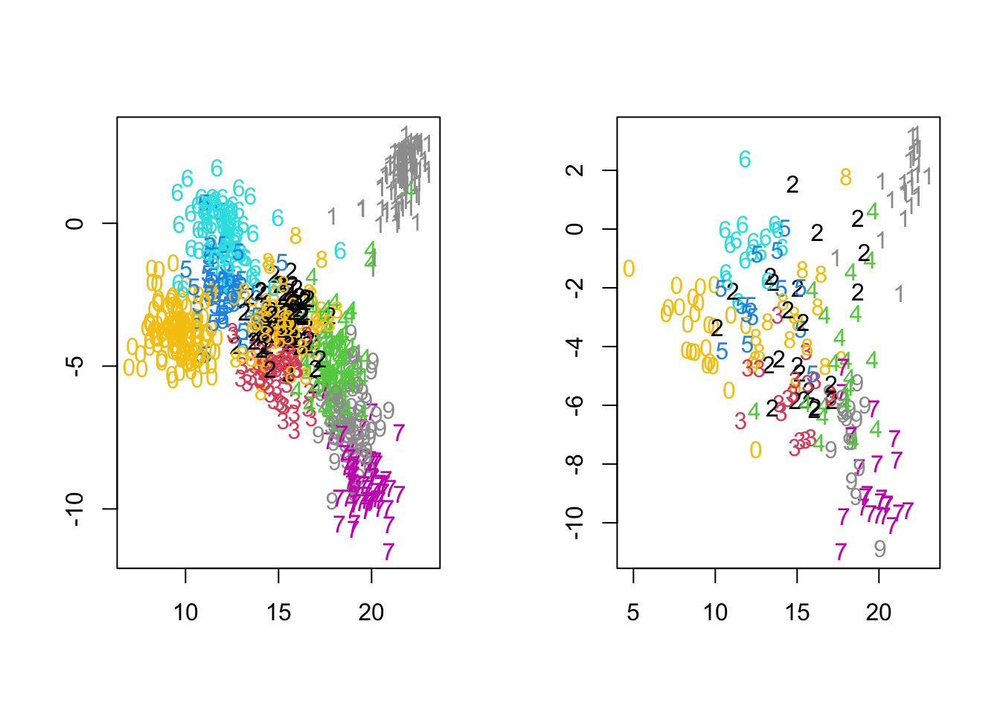
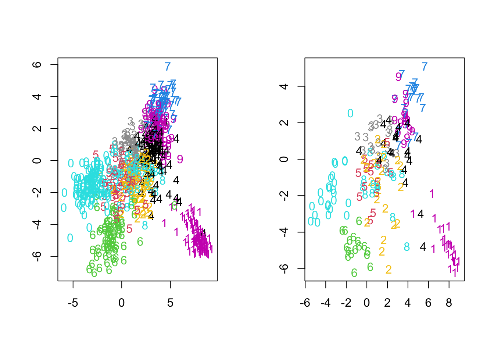

6.4 The Digits Recognition Example
Discriminant Analysis in R
To illustrate the concepts presented in this section, we are going to work with the handwritten digits data set from the ESL book. The data can be found in the ElemStatLearn library (which is not compatible with newer versions of R) or in the tensorBSS library. The goal in this example is to classify the digits correctly. To that end, we are foinf to use QDA, LDA, FDA and Naive Bayes techniques.
## Loading required package: JADE## Loading required package: fICA## Registered S3 method overwritten by 'quantmod':
## method from
## as.zoo.data.frame zooIn this data set, the response is in the first column. If we want (for illustration purposes), we can extract the first six images and plot them:
par(mfrow=c(3,3), mai=c(0.25,0.25, 0.25, 0.25))
for (i in 1:6){
digit.img = matrix(zip.train[i, -1], nrow = 16, byrow = TRUE)
digit.img = t(digit.img)[,16:1]
image(1:16,1:16,digit.img, axes = FALSE)
}
There is no pre-loaded testing data set in this library, hence we split the give data in testing and training:
set.seed(598)
n <- nrow(zip.train)
train.index <- sample(1:n, 800)
remaining.index = setdiff(1:n, train.index)
test.index = sample(remaining.index, 200)
train.zip <- zip.train[train.index, ]
test.zip <- zip.train[test.index, ]
X.train <- train.zip[, 2:257]
Y.train <- train.zip[, 1]
X.test <- test.zip[, 2:257]
Y.test <- test.zip[, 1]Linear Discriminant Analysis (LDA)
We start by running the Linear Discriminant Analysis (LDA):
Then, we predict and compute a prediction table. We also compute the accuracy of the method.
Y.predicted = predict(digits.lda, X.test)$class
# table(Y.test, Y.predicted) ## Remove comment to see output
1 - sum(Y.test != Y.predicted) / length(Y.test)## [1] 0.845The accuracy here is approximately 84.5%!
Quadratic Discriminant Analysis (QDA)
If we try to run a Quadratic Discriminant Analysis (QDA), then we obtain an error message due to the rank deficiency of the sigma matrix for each group. Unfortunately, the MASS package is not able to handle this issue.
Fisher Discriminant Analysis (FDA)
Let us try to see if FDA works. Project the data onto FDA directions (returned by the lda function).
## [1] 256 9These directions turned out to be 9 in our case!
F = X.train%*%FDA.digits.directions
par(mfrow=c(1,2))
plot(F[,1],F[,2], type="n", xlab="", ylab="")
text(F[,1], F[,2], Y.train, col=Y.train+7)
F.test = X.test%*%digits.lda$scaling;
plot(F.test[,1], F.test[,2], type="n", xlab="", ylab="")
text(F.test[,1], F.test[,2], Y.test, col=Y.test+7)
For illustration purposes, we display the projection of the data onto the first two dimensions. Projecting in other dimensions will give a different result, so feel free to change the dimensions and see the difference.
On the left, you can observe that the training data is well-separated into ten classes when using these two directions. However, replicating the same result with the test data on the right is not possible. This discrepancy arises because of overfitting to the training data.
Computational Remarks
Let’s discuss how to compute the FDA directions. We start by computing the within group covariance matrix \(W\):
tmp.lm = lm(X.train ~ as.factor(Y.train) - 1); # each x_i - its group mean
W = cov(tmp.lm$res)
eigenW = eigen(W)
summary(eigenW)## Length Class Mode
## values 256 -none- numeric
## vectors 65536 -none- numericThen, we compute \(B\) the between-group covariance matrix:
So, now we can extract the FDA directions:
FDA.eigen = eigen(A %*% B %*% t(A))
FDA.eigen.dir = A %*% FDA.eigen$ve[, 1:9]
for(j in 1:9)
print(cor(FDA.eigen.dir[, j], FDA.digits.directions[, j]))## [1] 1
## [1] 1
## [1] 1
## [1] 1
## [1] -1
## [1] 1
## [1] 1
## [1] 1
## [1] 1FDA vs PCA
Obtain the top 100 PCs:
Sigma = cov(X.train)
dig.eigen=eigen(Sigma);
PCA.dir = dig.eigen$ve[, 1:100] # pick top 100 PCA directions
dim(PCA.dir)## [1] 256 100Note that directions from PCA are orthogonal:
## [,1] [,2] [,3] [,4] [,5] [,6] [,7] [,8] [,9] [,10]
## [1,] 1 0 0 0 0 0 0 0 0 0
## [2,] 0 1 0 0 0 0 0 0 0 0
## [3,] 0 0 1 0 0 0 0 0 0 0
## [4,] 0 0 0 1 0 0 0 0 0 0
## [5,] 0 0 0 0 1 0 0 0 0 0
## [6,] 0 0 0 0 0 1 0 0 0 0
## [7,] 0 0 0 0 0 0 1 0 0 0
## [8,] 0 0 0 0 0 0 0 1 0 0
## [9,] 0 0 0 0 0 0 0 0 1 0
## [10,] 0 0 0 0 0 0 0 0 0 1but directions from FDA are not:
## [,1] [,2] [,3] [,4] [,5] [,6] [,7] [,8] [,9]
## [1,] 112.81 -36.31 -1.72 -74.75 21.61 -23.03 28.10 84.45 25.98
## [2,] -36.31 76.33 10.78 36.52 -16.64 0.05 -63.48 -22.84 -3.74
## [3,] -1.72 10.78 75.85 5.00 4.98 2.03 -18.44 -8.86 1.40
## [4,] -74.75 36.52 5.00 221.53 -15.22 20.63 -0.99 -78.55 -47.91
## [5,] 21.61 -16.64 4.98 -15.22 113.25 -24.92 -8.64 -0.74 -12.94
## [6,] -23.03 0.05 2.03 20.63 -24.92 85.31 36.17 -22.76 -2.01
## [7,] 28.10 -63.48 -18.44 -0.99 -8.64 36.17 217.71 6.06 -2.48
## [8,] 84.45 -22.84 -8.86 -78.55 -0.74 -22.76 6.06 165.63 6.32
## [9,] 25.98 -3.74 1.40 -47.91 -12.94 -2.01 -2.48 6.32 101.53But, FDA directions are orthogonal with respect to the within-class covariance matrix \(W\):
## [,1] [,2] [,3] [,4] [,5] [,6] [,7] [,8] [,9]
## [1,] 1 0 0 0 0 0 0 0 0
## [2,] 0 1 0 0 0 0 0 0 0
## [3,] 0 0 1 0 0 0 0 0 0
## [4,] 0 0 0 1 0 0 0 0 0
## [5,] 0 0 0 0 1 0 0 0 0
## [6,] 0 0 0 0 0 1 0 0 0
## [7,] 0 0 0 0 0 0 1 0 0
## [8,] 0 0 0 0 0 0 0 1 0
## [9,] 0 0 0 0 0 0 0 0 1Another approach would be to apply PCA first to reduce the dimensionality of the problem, and then apply FDA. As an example:
newX.train = X.train %*% PCA.dir[, 1:100];
new.digits.lda = lda(newX.train, Y.train);
new.X.test = X.test %*% PCA.dir[, 1:100]
Y.test.pred = predict(new.digits.lda, new.X.test)$class
table(Y.test, Y.test.pred)## Y.test.pred
## Y.test 0 1 2 3 4 5 6 7 8 9
## 0 25 0 0 0 0 0 0 0 0 0
## 1 0 25 0 0 0 0 0 0 0 0
## 2 0 0 23 0 0 0 0 0 1 0
## 3 0 0 0 16 0 0 0 1 1 0
## 4 0 2 0 0 18 0 0 0 0 1
## 5 0 0 0 4 0 9 0 0 0 1
## 6 0 0 0 0 0 0 17 0 0 0
## 7 0 0 0 0 0 0 0 20 0 3
## 8 0 1 1 0 2 0 0 0 12 0
## 9 0 0 0 0 0 0 0 2 0 15## [1] 20newF=newX.train%*%new.digits.lda$scaling;
newFtest=X.test%*%dig.eigen$ve[,1:100]%*%new.digits.lda$scaling
par(mfrow=c(1,2))
plot(newF[,1],newF[,2], type="n", xlab="", ylab="")
text(newF[,1], newF[,2], Y.train, col= Y.train+5)
plot(newFtest[,1], newFtest[,2], type="n", xlab="", ylab="")
text(newFtest[,1], newFtest[,2], Y.test, col=Y.test+5)
In this case, we observe that there is not as clear a separation observed in training data as before. This reduction in separation is expected due to the substantial dimension reduction from 256 to 100. While the training data’s separation may not be as good as before, this approach produces more consistent results between the training and test datasets, which can help mitigate overfitting issues.
Naive Bayes Prediction
Implementation of the Naive Bayes predictor. We use the the naiveBayes function in the e1071 library.
zip17 = train.zip[train.zip[,1] %in% c(1,7),]
zip17.test = test.zip[test.zip[,1] %in% c(1,7),]
Y.17 = as.factor(zip17[,1])
X.17 = zip17[,-1]
NBfit = naiveBayes(X.17, Y.17)
y_pred = predict(NBfit, zip17.test)
accuracy = mean(y_pred == zip17.test[,1])
table(Predicted = y_pred, Actual = zip17.test[,1])## Actual
## Predicted 1 7
## 1 22 0
## 7 3 23